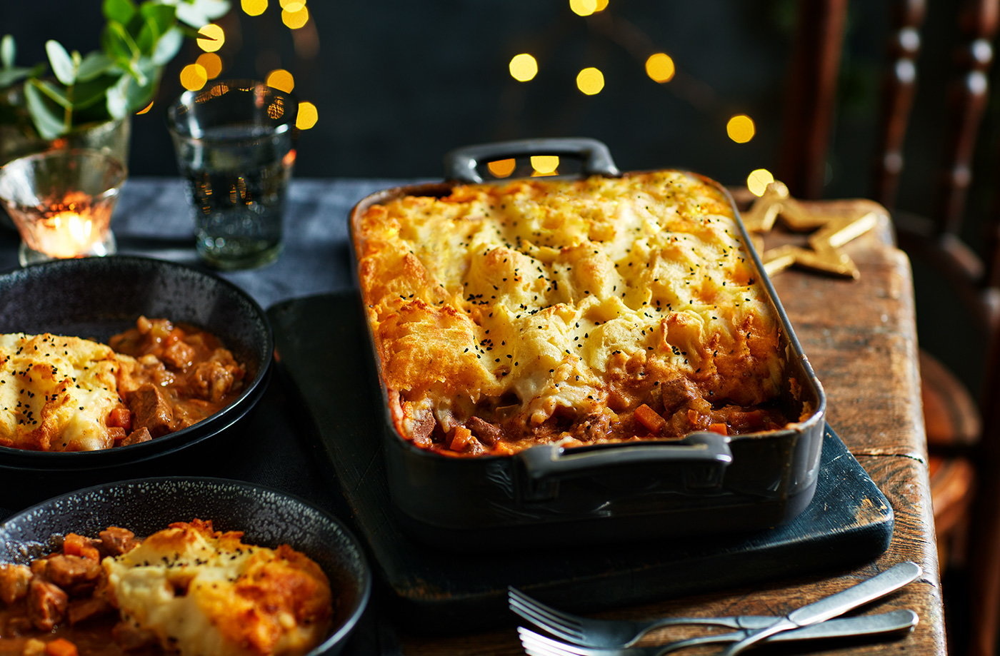

Shepherd's Pie

Description
Try a twist on a classic shepherd's pie recipe that's packed with leftover lamb and warming winter flavours. Add spices like cumin, cinnamon and ground coriander, a kick of green chilli and some hearty veg to enhance this Christmas leftovers recipe.
Ingredients
- 1 tbsp olive oil
- 1 onion, finely chopped
- 3 celery stalks, diced
- 2 carrots, diced
- 1 green chilli, deseeded and finely chopped
- ½ tsp ground cumin
- ½ tsp ground coriander
- ½ tsp ground cinnamon
- 300g leftover cooked lamb, diced
- 1 tbsp tomato purée
- 800ml hot lamb or chicken stock
Method
- Heat the oil in a large, deep casserole dish over a medium heat. Add the onion, celery, carrots and seasoning. Cook for 10 mins, stirring occasionally, until the veg is softened. Add the chilli and spices and stir well.
- Add the lamb and tomato purée and stir to combine. Pour in the stock and simmer for 20 mins until reduced.
- Meanwhile, add the potatoes to a pan of boiling salted water. Cook for 15 mins or until tender and drain well. Mash with the butter and milk until smooth.
- Preheat the oven to gas 6, 200°C, fan 180°C. Spoon the lamb mix into a large ovenproof dish, and cover with the mash. Dot with butter and sprinkle over the nigella seeds. Bake for 20 mins until the mash is crisp and golden.